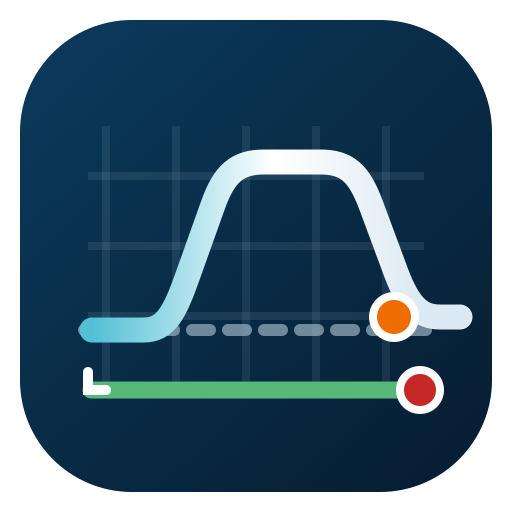

01
0 file
Tabellino di progetto
PDF · caricamento multiplo

Verifica grafico ↔ progetto della sopraelevazione
I punti vengono analizzati internamente al passo impostato, ma il risultato è aggregato: una sola segnalazione per curva, riferita alla tratta omogenea con il livello di criticità più elevato.
PDF · caricamento multiplo
PDF · caricamento multiplo
Appena caricato, il PDF viene trasformato in un dataset Progressiva/H pronto per i confronti.
| Progressiva | H | Rotaia | Binario | Origine |
|---|
Per ogni curva viene mostrata la tratta omogenea associata al livello di allerta più elevato riscontrato. I singoli campioni restano disponibili solo per il calcolo interno.
| Codice | Curva | Tratta omogenea | H progetto | H rilevata | Δ max | Motivo | Affidabilità |
|---|
L’indice combina la qualità di riconoscimento della linea sul grafico con la copertura effettiva del confronto rispetto ai punti utili. Non modifica il codice colore dell’anomalia: indica quanto è solida la lettura automatica.
La stampa riporta solo i dati essenziali: sintesi, codice colore, tratte aggregate e indice di affidabilità. Il grafico non viene incluso.